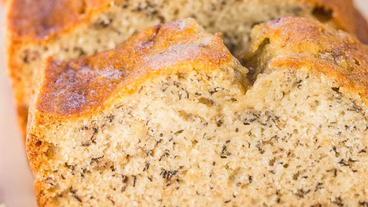

Flour Bakery's Banana Bread

Description
One of the best banana recipes out there, from the famed Flour Bakery.
Ingredients
- 1 2/3 cups all-purpose flour
- 1 teaspoon baking soda
- 1/4 teaspoon ground cinnamon
- 1/2 teaspoon salt
- 1 cup plus 2 tablespoons sugar
- 2 eggs
- 1/2 cup oil
- 3 1/2 bananas, very ripe, mashed
- 2 tablespoons creme fraiche or sour cream
- 1 teaspoon vanilla extract
- 2/3 cup walnuts, toasted and chopped
Steps
-
Set oven to 350 degrees F. Line the bottom of a loaf pan with parchment
paper.
- Sift together the flour, baking soda, cinnamon and salt.
-
Beat sugar and eggs with a whisk until light and fluffy, about 10
minutes.
- Drizzle in oil.
- Add mashed bananas, creme fraiche, and vanilla.
- Fold in dry ingredients and nuts.
-
Pour into a lined loaf pan and bake for about 45 minutes to 1 hour.
Return home